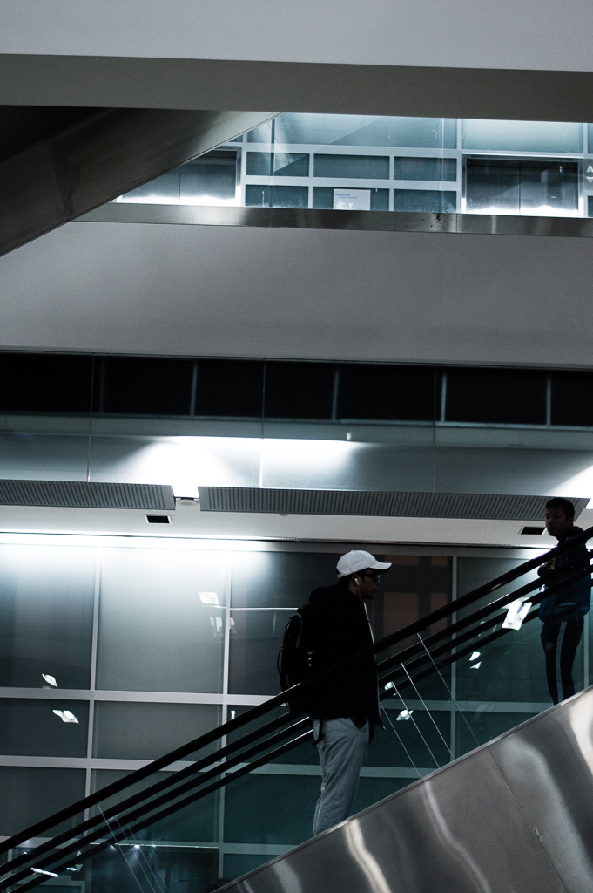
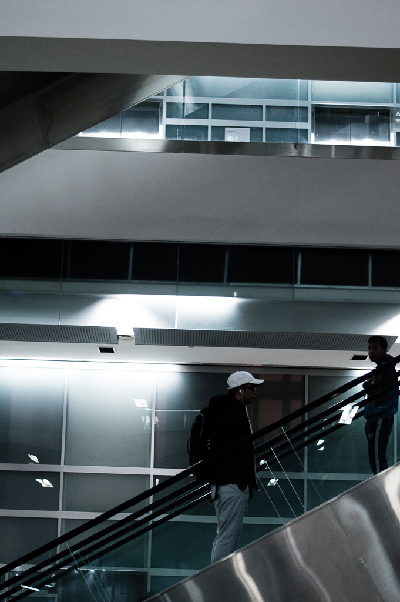

Photos
I'm a huge sucker for design and composition. Analyzing various films and directors, as well as taking inspiration from the plethora of photographers whom I follow on tumblr and Instagram, has inspired me to capture photos with emphasis on framing.
But in here, you'll just see a photo dump of everything I've taken recently.
Note: All photos below have been edited with VSCOCam/Adobe Lightroom. Feel free to visit my instagram here!

 
